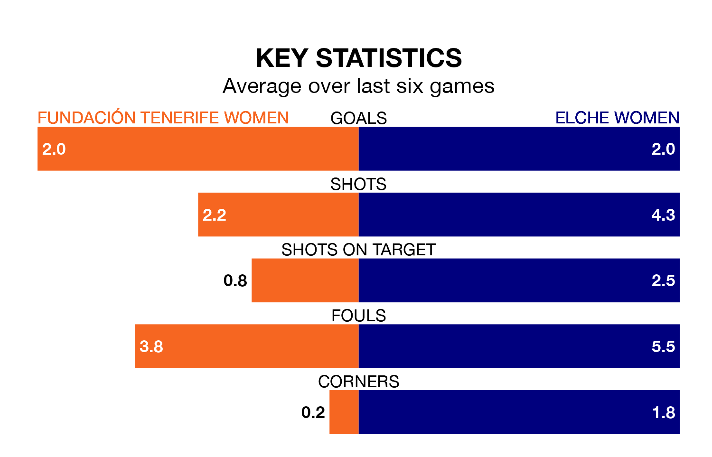

Elche Women face a challenge to maintain their high-scoring form away against a tight Fundación Tenerife Women defence on Saturday.
With 41 goals in 20 games, Elche are the joint-top scorers in the Segunda Federación Femenina ahead of the 11am kick-off.
They face a Fundación Tenerife side who have scored 30 in 20 matches, but conceded only 13 goals, putting them third among the league's tightest defences – only Real Madrid II Women and UD Tenerife II Women have conceded fewer goals.
Fundación Tenerife are in exceptional form in the Segunda Federación Femenina, with six wins and no losses from their last six games.
With three wins and three losses over that period, Elche's form is much worse – they have taken nine points from 18, compared to the hosts' 18.
Fundación Tenerife are fifth in the table after 20 games, of which they have won 13 and drawn two, earning 41 points.
The away team are seven places behind Fundación Tenerife in 12th, with nine wins and four draws putting them on 31 points.
Fundación Tenerife's last match was on Sunday, a 2-0 win against Unión Viera Women, with getting the goals for Fundación Tenerife.
Elche beat Valencia II Women 4-1 last time out, on Saturday, with on the scoresheet.
Updated: 12:18 (UTC), 19/02/24